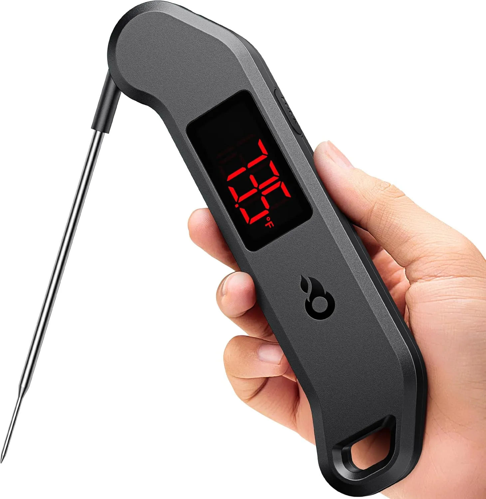
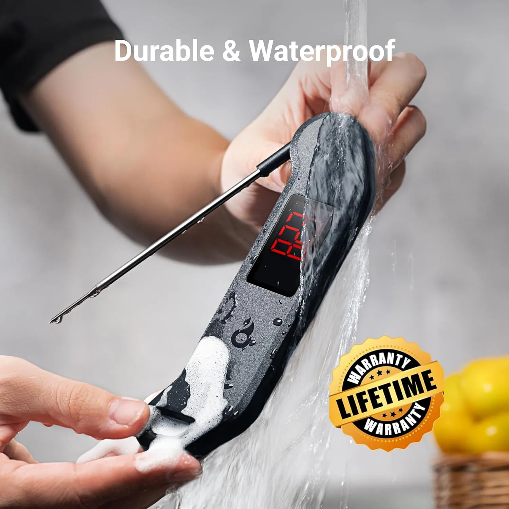
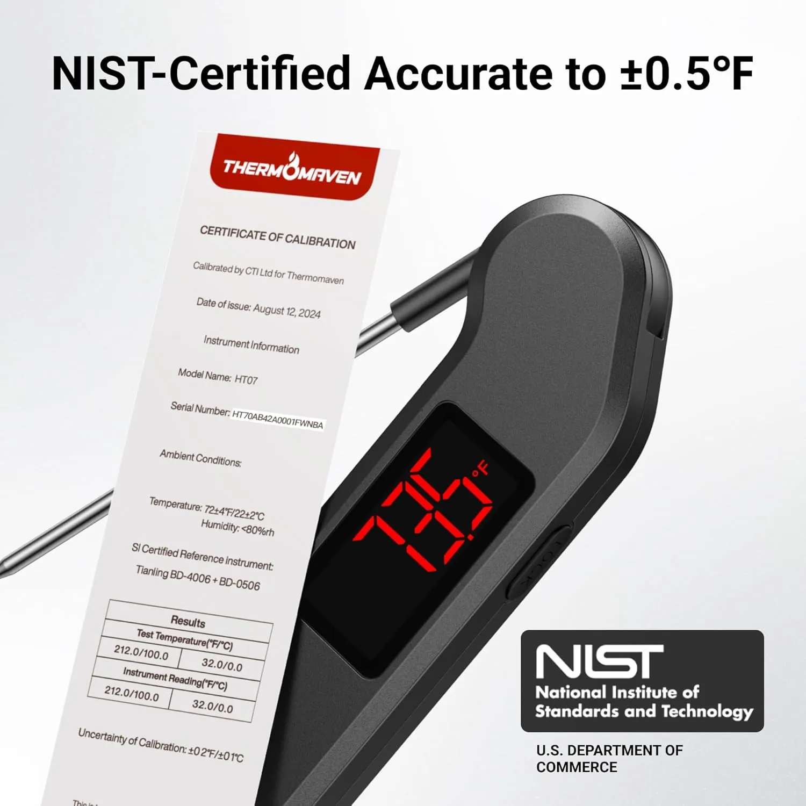
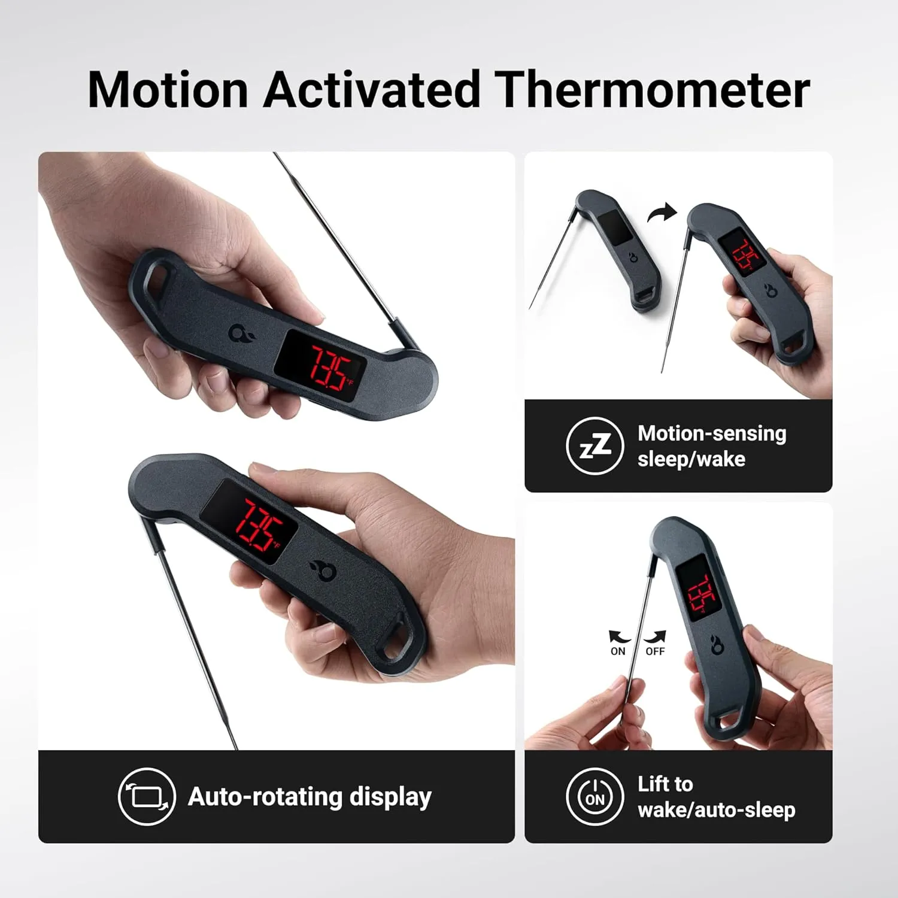
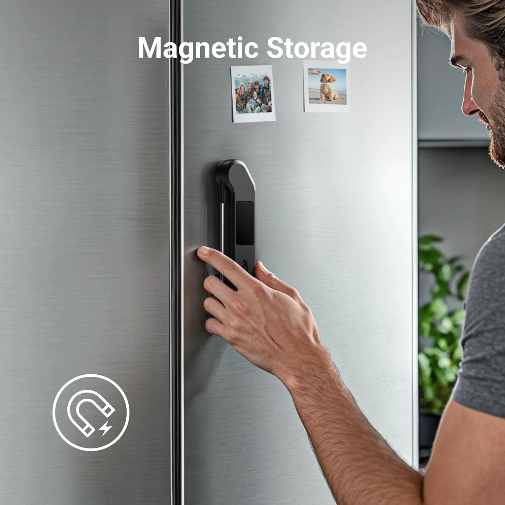
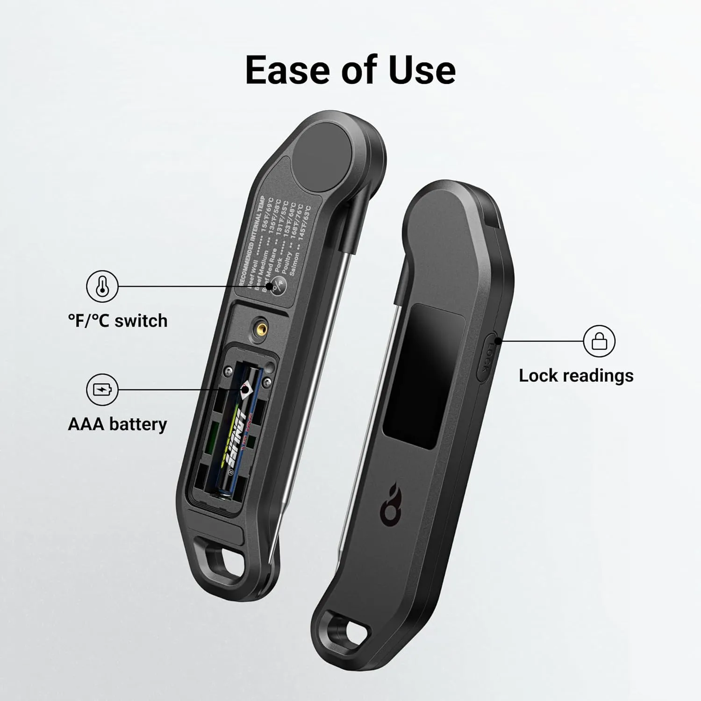

Stop cutting into steak just to see if dinner is done.
Everyone knows the moment: the outside looks perfect, the pan smells amazing, and then you slice the meat open too early. A fast digital meat thermometer takes the guessing out of steak, chicken, roasts, BBQ, and weeknight dinners.
Good cooking gets easier when you stop guessing.
A lot of home cooks do the same dance every time meat is on the stove or grill. Press it with tongs. Stare at the color. Cut a little corner. Put it back. Hope nobody notices the juices running out.
A thermometer is not just for serious BBQ people. It helps regular kitchens, busy parents, apartment cooks, and weekend grillers know when food is ready without ruining texture or overcooking expensive meat.

Meat is easy to ruin at the very end.
Most cooking mistakes do not happen when you season the steak or heat the pan. They happen in the last few minutes, when nobody is sure if the inside is ready.
The outside can lie.
A chicken breast can look browned and still need more time. A steak can look dark on the outside and already be past the temperature you wanted. A thick burger can seem done until the middle tells another story.
That is why cutting into meat is such a bad habit. It gives you an answer, but it also lets the juices run out and makes the plate look less finished. For steak nights, backyard BBQ, Thanksgiving turkey, pork chops, or weeknight chicken, temperature is a cleaner answer.
The ThermoMaven thermometer is built for that exact moment: quick check, clear number, no guessing, no dramatic slicing, no standing there wondering if dinner needs two more minutes.

One second matters when food is still cooking.
Some kitchen thermometers are slow enough to be annoying. You hold the oven door open, hover over the grill, or keep the pan on the heat while the number creeps upward.
This model is built around a thermocouple sensor, with a fast readout and ±0.5°F accuracy. That is the kind of detail that helps when you are trying to catch a steak before it jumps past medium-rare or pull chicken before it turns dry.
The NIST-certified accuracy angle also gives it a more serious feel than a basic bargain thermometer. It is not overkill if you cook meat often. It is the tool that keeps dinner consistent.
- Useful for steak, chicken, pork, turkey, burgers, roasts, BBQ, and candy work.
- Bright display helps when grilling outside or cooking in lower light.
- Fast temperature checks reduce heat loss from ovens, smokers, and grills.

Not just for steak people.
A meat thermometer is one of those tools you start using for one thing and then reach for all week.
Check steaks, burgers, chicken thighs, and ribs without cutting into the food on the grill.
Stop overcooking chicken breast because you are worried the middle is not ready.
Use it for turkey, roast beef, pork loin, or big cuts where guessing can get expensive fast.
Cook proteins in batches with more consistency instead of hoping every piece came out right.
Quick checks help when the grill lid should not stay open longer than necessary.
Helpful when cooking poultry, ground meat, and reheated leftovers where temperature matters.
Readable, washable, and easy to grab.
The bright LED display is the kind of feature that sounds small until you are standing by a grill at night or trying to read a tiny screen through steam.
The waterproof design also matters because cooking tools get messy. Meat juices, sauce, sink splashes, and quick cleanup are part of normal use. A thermometer that can handle rinsing fits better into a real kitchen routine.
The slim body and magnetic storage make it easier to keep close. The best thermometer is the one you actually grab before you overcook the food.

What stands out on this thermometer.
The strongest features are the ones that make daily cooking less annoying, not more complicated.
Fast temperature checks help you keep food moving without waiting around.
Better precision for steak, poultry, roasts, BBQ, and candy-style cooking.
Bright screen and rotating display make it easier to read from different angles.
Built for kitchen splashes, sauce, quick rinsing, and regular cleanup.
This is not a gadget for showing off. It is a tool for avoiding bad dinner.
Some kitchen gadgets feel fun for a week and then sit unused. A meat thermometer is different because it solves the same problem over and over: knowing when food is done.
If you rarely cook meat, you may not need a professional-style thermometer. But if you grill, roast, meal prep, cook chicken often, or hate ruining steak, this is the kind of tool that quickly earns its place.
It also makes cooking less stressful. Instead of relying on luck, you check the number and move on.

A thermometer only helps if it is easy to reach.
The magnetic storage feature sounds simple, but it can change how often you use it. Put it on the fridge or another magnetic surface near your cooking zone, and it becomes part of the routine instead of another tool buried in a drawer.
The slim body helps too. It is easy to grab, easy to hold, and does not feel like a bulky grill accessory that only comes out twice a year.
For everyday kitchens, that convenience matters as much as the specs.

A strong pick if you cook steak, chicken, BBQ, or roasts more than once in a while.
If you are tired of cutting into meat, overcooking chicken, or guessing your way through grilling, this thermometer is a practical upgrade. It is fast, readable, waterproof, and easy to keep nearby.
View on AmazonBefore adding it to your kitchen.
Is a meat thermometer worth it for home cooking?
Yes, if you cook steak, chicken, roasts, pork, burgers, or BBQ often. It helps prevent overcooking and reduces food safety guesswork.
Can it be used for grilling?
Yes. The bright LED display and fast reading make it useful for outdoor grilling, especially when lighting is not perfect.
Does it help with chicken?
Yes. Chicken is one of the best uses because it is easy to overcook when you are worried the center is not done.
Is the display easy to read?
The LED screen is designed to be bright, and the auto-rotating display helps when checking food from different angles.
Can it be rinsed after use?
The thermometer is designed as waterproof, which makes cleanup easier after normal kitchen use. Always follow the product care instructions.
Who is this best for?
Home cooks, BBQ fans, steak lovers, meal preppers, holiday cooks, and anyone who wants less guessing when cooking meat.